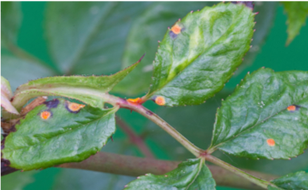
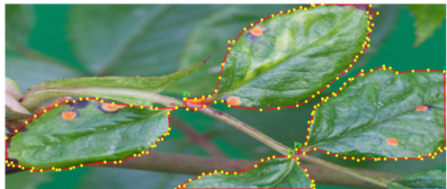
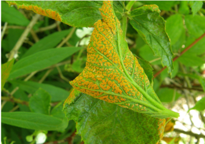
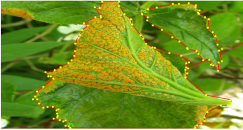

Detecting Plant disease with Computer vision models
Artificial Intelligence (AI) helps farmers reinvent the way they did farming for decades.
Computer vision models built on the basis of Artificial Intelligence & machine learning
inspired modernization in agriculture sector.
Do plants fall sick? Yes, they regularly fall sick & protecting them
from diseases has become a major challenge for farmers.
Why protect rather than prevent?
Plant diseases one of the world’s most common problem. There are various reasons like weather,
soil conditions that trigger the fungal infections that cause emergence of diseases on plant.
Farmers protect their farms from these diseases to avoid reduction in their yield,
this problem has to be addressed at the earliest to avoid spreading to other plants.
“They occur regularly and require constant monitoring, although we observe they spread rapidly.
By the time we take action on the disease, it spreads all over the farm destroying even healthy
plants” says Ramalingam, an agriculturist.
“By the time we come to know about the type of disease and treat them they spread rapidly and
we end up investing in hell lot of fungicides to avoid disease. Worst part is different
disease require different kinds of fungicides” says Krishna, an agriculturist.
Is AI boon for farmers?
Yes, we can solve this problem with the help of AI & ML driven machines.
Developers are focusing on building advanced computer vision models which detect plant/crop diseases.
AI & ML are enabling companies to build models which help identifying from diseases & pests to
picking fruits (produce). Developers train their models to detect plant diseases at a very early
stage and prevent plant diseases.
Annotation tools are used to annotate objects like image, text. Video etc. to train their models.
Quality of the model depends on the type of annotation used to train computer vision models.
Annotating with polygon tool
One of the Best tool for annotating objects for agricultural ML models is Polygon tool.
Polygon annotation tools supports to annotate irregular shapes, this tool allows to consider
precise and target affected areas of defected plants.
Training computer vision models becomes easy by annotating objects using
polygon tool. Some of the use cases are:
Training computer vision models using polygon tool to detect rust disease on rose leaf.

xample 1Leaf with rust disease before annotation.

Leaf with disease annotated with Polygon tool.

Leaf with rust disease before annotation.

Leaf with disease annotated with Polygon tool.
Trains Models to: Detect the Pustules in Orange, Yellow, Black, Brown, Black or White in color
Identifies: Rust diseases on Plant
By using polygon annotation tool, models can be trained to detect Pustules in Orange, Yellow, Black,
Brown, Black or White in color, this enables the model to detect rust disease that’s ruining the
plant. Training the stages of the affected leaf makes the model identify in initial phases itself.
The annotation tool enables the models to train small, dark raised spots on the leaf
caused due to wet and warm environments. The trained models help farmers in detecting t
he disease and protect plant
The most common problem in plants is Aphids. Detecting them now became easy with the help of
AI enabled models. Annotating leafs and stems effected with small green or yellow bugs helps
the models to detect the disease of the plant.